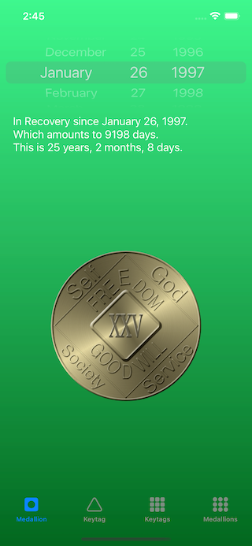
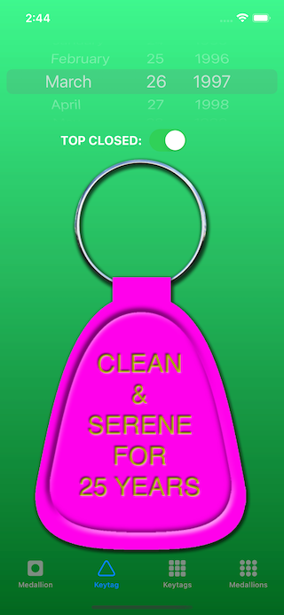
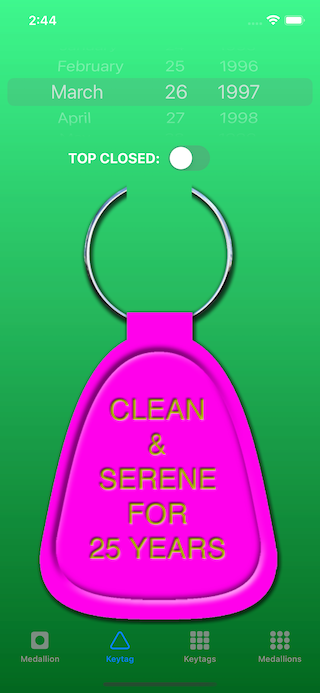
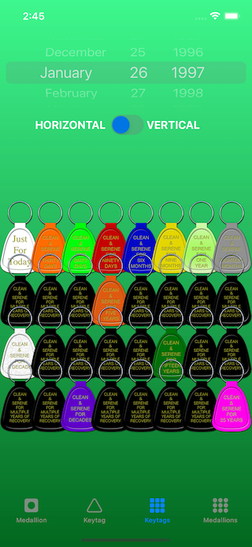
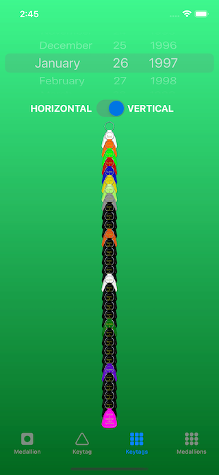
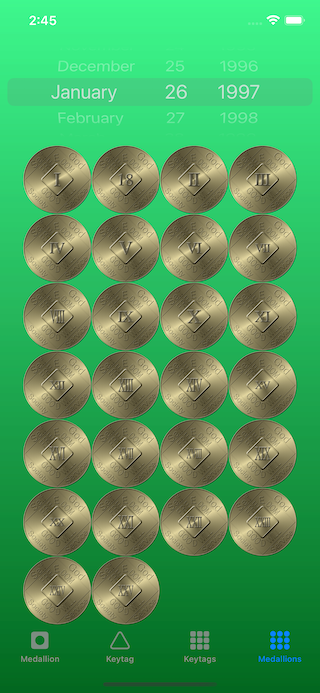
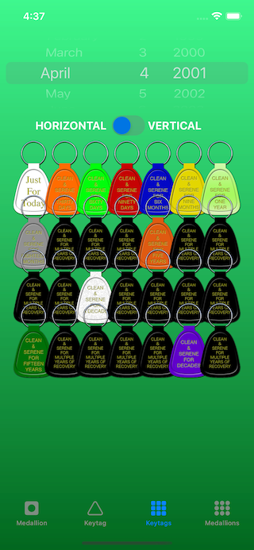
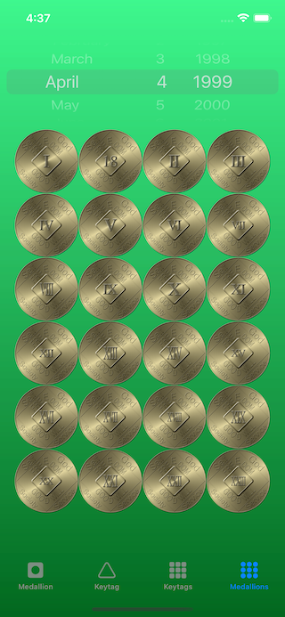
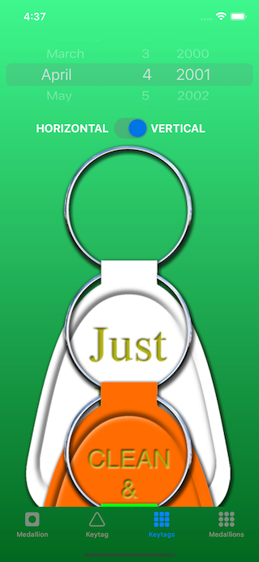

View on GitHub
View on GitHub
 Reference
Reference
LGV_UICLEANTIME WIDGET
This is a set of methods and resources that will produce a UIKit UILabel, containing a localizable description of a span of cleantime, or UIKit UIImages, representing keytags or medallions (standard medallions).
Here is the GitHub repo for the project.
OVERVIEW
Use these methods and resources to implement a visual, “skeuomorphic,” display of the calculations that are generated by the LGV_Cleantime package (This package depends on that package).
WHAT PROBLEM DOES THIS SOLVE?
This makes it very easy to provide a visual representation of important NA Recovery milestones. LGV_Cleantime will calculate them, but this module will display them (only on iOS/iPadOS).
Displays
Keytags
Keytags are displayed as classic “saddle” keytags (the real ones are made from plastic), with a ring at the top. This ring can be specified as “open,” or “closed” (more on that, later)
| Figure 1: The Standard Keytag | Figure 2: With the Top Ring “Open” |
|---|---|
|  |  |
Medallions
The medallions are “skeuomorphic” renditions of the standard NA cleantime medallions (front only):
| Figure 3: The Medallion |
|---|
|  |
Singly, Or In Groups
These can be displayed, either as “one-off,” single images, or in arrays, Figures 1-3 show them “singly,” while Figures 4-6 show them in arrays:
| Figure 4: A Horizontal Matrix of Keytags | Figure 5: A Vertical Strip of Keytags | Figure 6: A Horizontal Matrix of Medallions |
|---|---|---|
|  |  |  |
You can see why the top ring is optionally open, in Figure 5.
These are provided as UIKit UIImages, embedded in UIKit UIImageViews. These can be put into scrollers, or other contexts.
REQUIREMENTS
These classes are UIKit-only (iOS/iPadOS), and require the Swift Programming Language.
Dependencies
The package is dependent upon the following three packages:
IMPLEMENTATION
Installation
Swift Package Manager (SPM):
The URI for the repo is:
- git@github.com:LittleGreenViper/LGV_UICleantime.git (SSH), or
- https://github.com/LittleGreenViper/LGV_UICleantime.git (HTTPS).
If you want to find out more about SPM, then you might want to view this series).
Resources
The package relies on resources that should be provided in a Localizable.strings file, and embedded as images in your app bundle.
These are not being embedded into the package, because it is likely that you will want to mix them with your own localization resources.
Usage
Once you have the package included in your project, you’ll need to include the library:
import LGV_UICleantime
The package has four different classes that can be used. One, is a subclass of UILabel, and the other three are subclasses of UIImageView:
LGV_UICleantimeDisplayTextLabel is a subclass of
UILabel. It will display a “natural English (or other localization) summary of total cleantime (total days, also years, months, etc.).LGV_UIMultipleCleantimeKeytagImageView and LGV_UISingleCleantimeKeytagImageView are subclasses of
UIImageView, and display keytags, as shown in Figures 1, 2, 4, and 5.LGV_UISingleCleantimeMedallionImageView is a subclass of
UIImageView, and displays a single medallion (like Figure 3).LGV_UICleantimeMultipleMedallionsImageView is also a subclass of
UIImageView, and displays a matrix of medallions (as in Figure 6).
The Test Harness App
The test harness app is designed to demonstrate the various aspects of the package, and provide some sample implementation. It is an iOS/iPadOS app, and its source code is in the Tests/LGV_UICleantimeTestHarness subdirectory.
It has four tabs, which illustrate each of the above subclasses:
Tab 0: The Text Report Label, and Single Medallion View
| Figure 7: Tab 0 ("Medallion”) | Figure 8: Tab 1 (“Keytag”) | Figure 9: Tab 2 (“Keytags”) | Figure 10: Tab 3 (“Medallions”) |
|---|---|---|---|
 |
 |  |
The Keytags and Medallions tabs have scrollers, which will allow you to scroll the images.
The two keytag tabs have switches, allowing you to change the appearance/layout:
| Figure 11: Keytag Open Top | Figure 12: Vertical Keytag Strip |
|---|---|
|  |
LICENSE
The code and keytag images are MIT license. Use them as you will.
However, the medallion images are renderings of the standard bronze NA World Services (NAWS, Inc.) cleantime commemoration medallions. The design of those medallions is copyrighted by NA World Services.
It is important to treat the intellectual property of NA with respect.